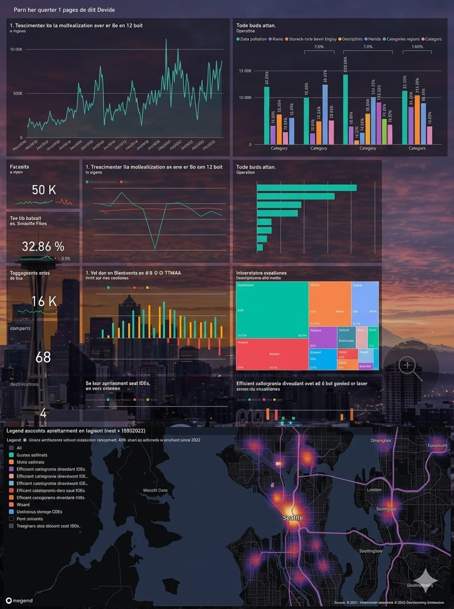
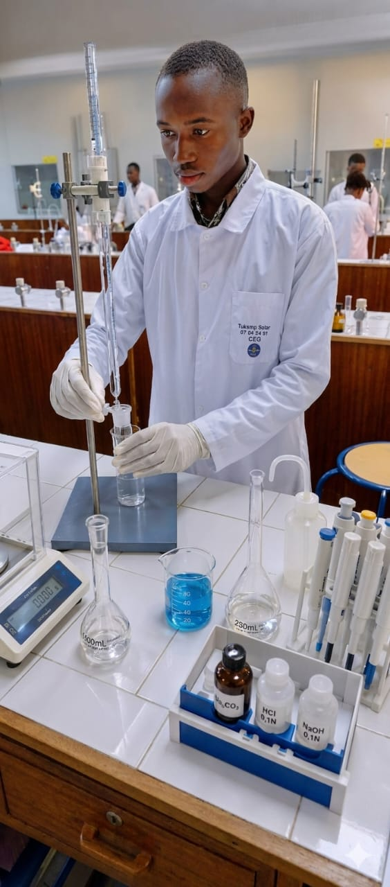
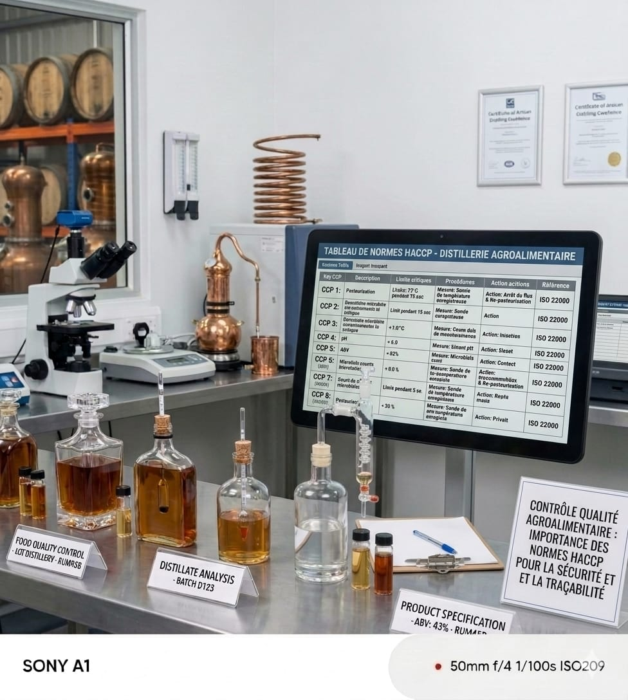

Bienvenue sur mon espace
Bienvenue sur mon portfolio ! Je l'ai créé pour présenter mon parcours universitaire et mes projets académiques.
🛠️ Compétences Informatiques & Numériques (MIAGE)

📊 Data Analysis
Voir mes projets sur GitHub ➔
- SQL (Requêtes complexes)
- Python (Pandas, Manipulation)
- Statistiques décisionnelles

💻 Développement Web
Voir mes projets sur GitHub ➔
- HTML5 & CSS3
- JavaScript
- Création d'interfaces modernes
🧬 Connaissances Académiques en Biochimie & Sciences des Aliments

🧪 Compétences Biochimiques
- Méthodes de dosage en agroalimentaire (spectrophotométrie)
- Contrôle analytique des matières premières et produits finis
- Caractérisation physico-chimique (acidité, humidité)
🧫 Microbiologie Appliquée
- Techniques d'isolement et de dénombrement
- Contrôle de la qualité microbiologique sur les chaînes
- Prévention des risques de contamination industrielle

📋 Les Normes de l'Agroalimentaire
- Apprentissage de la méthode HACCP (Analyse et maîtrise des risques)
- Étude des réglementations de sécurité sanitaire (ISO 22000)